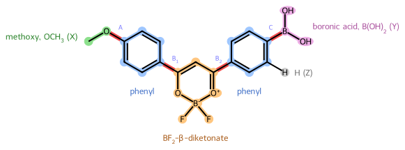

アセトニトリル中のメトキシキレート
Giovanni Gravili ![]()
概要
対照とするアセトニトリル中のメトキシキレート \mathbf{1} です。S_0 と S_1 の極小、両方の状態での結合 \mathrm{A} と \mathrm{B}_1 まわりのねじれ、二つのねじれの S_0 マップを求めます。
キーワード
TICT, ジフルオロボロンキレート, 緩和スキャン, 電荷移動
ノート準備済み
- 計算を準備しましたが、どれも投入していません。

計算
このワークフローのすべての計算を、図と同じまとまりで示します。スキャンの各計算はスキャンのページにあります。計算を選ぶとそのページが開きます。
---
config:
markdownAutoWrap: false
themeVariables:
fontSize: 13px
primaryColor: '#ffffff'
primaryBorderColor: '#adb5bd'
primaryTextColor: '#212529'
lineColor: '#6c757d'
clusterBkg: '#f8f9fa'
clusterBorder: '#dee2e6'
titleColor: '#212529'
edgeLabelBackground: '#ffffff'
themeCSS: '.nodeLabel, .nodeLabel p { white-space: nowrap !important; }
.nodeLabel a { display: inline-flex; align-items: baseline; white-space: nowrap; gap: 0.25em; }
.nodeLabel math { display: inline math !important; math-style: compact; }
.nodeLabel .katex-display { display: inline; margin: 0; }
'
theme: base
flowchart:
useMaxWidth: false
defaultRenderer: elk
rankSpacing: 24
nodeSpacing: 24
diagramPadding: 8
curve: rounded
layout: elk
---
flowchart TB
Start1(( ))
Input1[/"<span>$$\mathbf{1}$$ の分子スクリーニングの構造</span>"/]
subgraph Minima["<span>極小と状態の性質</span>"]
%% description: $S_0$ と $S_1$ を最適化して検証し、各極小で電荷、双極子と垂直遷移を求めます。
direction TB
S0Opt["<a href='2026-11-13_115811/'>$$S_0$$ の最適化と検証</a>"]
S0Props["<a href='2026-11-13_115812/'>$$S_0$$ 極小での吸収の性質</a>"]
S1Opt["<a href='2026-11-13_115813/'>$$S_1$$ の最適化と検証</a>"]
S1Props["<a href='2026-11-13_115814/'>$$S_1$$ 極小での発光の性質</a>"]
end
subgraph TwistB1["<span>$$\mathrm{B}_1$$ まわりのねじれ</span>"]
%% description: ドナー側のフェニル環を核に対して $S_0$ と $S_1$ で回し、$S_0$ のスキャンに沿って垂直励起を求めます。
direction TB
S0ScanB1["<a href='2026-11-13_115815/'>$$\theta_{\mathrm{B}_1}$$ の緩和 $$S_0$$ スキャン</a>"]
S0ScanB1Td["<a href='2026-11-13_115816/'>$$\theta_{\mathrm{B}_1}$$ の $$S_0$$ スキャンに沿った垂直励起</a>"]
S1ScanB1["<a href='2026-11-13_115817/'>$$\theta_{\mathrm{B}_1}$$ の緩和 $$S_1$$ スキャン</a>"]
end
subgraph TwistA["<span>$$\mathrm{A}$$ まわりのねじれ</span>"]
%% description: ドナーをそのフェニル環に対して $S_0$ と $S_1$ で回し、$S_0$ のスキャンに沿って垂直励起を求めます。
direction TB
S0ScanA["<a href='2026-11-13_115818/'>$$\theta_\mathrm{A}$$ の緩和 $$S_0$$ スキャン</a>"]
S0ScanATd["<a href='2026-11-13_115819/'>$$\theta_\mathrm{A}$$ の $$S_0$$ スキャンに沿った垂直励起</a>"]
S1ScanA["<a href='2026-11-13_115820/'>$$\theta_\mathrm{A}$$ の緩和 $$S_1$$ スキャン</a>"]
end
subgraph TorsionMap["<span>二つのねじれのマップ</span>"]
%% description: 二つのねじれをまとめて $30^\circ$ の格子で $S_0$ を緩和し、収束した各点で垂直励起を求めます。
direction TB
S0Map["<a href='2026-11-13_115821/'>$$\theta_\mathrm{A}$$ と $$\theta_{\mathrm{B}_1}$$ の緩和 $$S_0$$ マップ</a>"]
S0MapTd["<a href='2026-11-13_115822/'>$$S_0$$ マップ上の垂直励起</a>"]
end
Output1[/"<span>$$\mathbf{1}$$ の $$E(\theta)$$、$$\Delta\mu$$ と電荷移動</span>"/]
End1((( )))
Start1 --> Input1
Input1 --> S0Opt
S0Opt --> S0Props
S0Opt --> S1Opt
S1Opt --> S1Props
S0Opt --> S0ScanB1
S0ScanB1 --> S0ScanB1Td
S1Opt --> S1ScanB1
S0Opt --> S0ScanA
S0ScanA --> S0ScanATd
S1Opt --> S1ScanA
S0Opt --> S0Map
S0Map --> S0MapTd
S0Props --> Output1
S1Props --> Output1
S0ScanB1Td --> Output1
S1ScanB1 --> Output1
S0ScanATd --> Output1
S1ScanA --> Output1
S0MapTd --> Output1
Output1 --> End1
classDef pending stroke:#adb5bd,stroke-width:2px;
classDef running stroke:#0d6efd,stroke-width:2px;
classDef verification stroke-dasharray:5 5;
classDef success stroke:#198754,stroke-width:2px;
classDef failed stroke:#dc3545,stroke-width:2px;
classDef problems stroke:#e0a800,stroke-width:2px;
class Start1,Input1,S0Opt,S0Props,S1Opt,S1Props,S0ScanB1,S0ScanB1Td,S1ScanB1,S0ScanA,S0ScanATd,S1ScanA,S0Map,S0MapTd,Output1,End1 pending;
linkStyle 0 stroke:#adb5bd,color:#adb5bd,stroke-width:2px;
linkStyle 1 stroke:#adb5bd,color:#adb5bd,stroke-width:2px;
linkStyle 2 stroke:#adb5bd,color:#adb5bd,stroke-width:2px;
linkStyle 3 stroke:#adb5bd,color:#adb5bd,stroke-width:2px;
linkStyle 4 stroke:#adb5bd,color:#adb5bd,stroke-width:2px;
linkStyle 5 stroke:#adb5bd,color:#adb5bd,stroke-width:2px;
linkStyle 6 stroke:#adb5bd,color:#adb5bd,stroke-width:2px;
linkStyle 7 stroke:#adb5bd,color:#adb5bd,stroke-width:2px;
linkStyle 8 stroke:#adb5bd,color:#adb5bd,stroke-width:2px;
linkStyle 9 stroke:#adb5bd,color:#adb5bd,stroke-width:2px;
linkStyle 10 stroke:#adb5bd,color:#adb5bd,stroke-width:2px;
linkStyle 11 stroke:#adb5bd,color:#adb5bd,stroke-width:2px;
linkStyle 12 stroke:#adb5bd,color:#adb5bd,stroke-width:2px;
linkStyle 13 stroke:#adb5bd,color:#adb5bd,stroke-width:2px;
linkStyle 14 stroke:#adb5bd,color:#adb5bd,stroke-width:2px;
linkStyle 15 stroke:#adb5bd,color:#adb5bd,stroke-width:2px;
linkStyle 16 stroke:#adb5bd,color:#adb5bd,stroke-width:2px;
linkStyle 17 stroke:#adb5bd,color:#adb5bd,stroke-width:2px;
linkStyle 18 stroke:#adb5bd,color:#adb5bd,stroke-width:2px;
linkStyle 19 stroke:#adb5bd,color:#adb5bd,stroke-width:2px;
linkStyle 20 stroke:#adb5bd,color:#adb5bd,stroke-width:2px;
極小と状態の性質
S_0 と S_1 を最適化して検証し、各極小で電荷、双極子と垂直遷移を求めます。
| 状態 | 計算 | プログラム | ジョブ | 計算開始 | 経過時間 |
|---|---|---|---|---|---|
 |
S_0 の最適化と検証 | Gaussian | Opt, Freq; Stable | ||
|
S_0 極小での吸収の性質 | Gaussian | SP; SP（TD）; SP | ||
|
S_1 の最適化と検証 | Gaussian | Opt（TD）, Freq（TD） | ||
|
S_1 極小での発光の性質 | Gaussian | SP; SP（TD）; SP |
\mathrm{B}_1 まわりのねじれ
ドナー側のフェニル環を核に対して S_0 と S_1 で回し、S_0 のスキャンに沿って垂直励起を求めます。
| 状態 | 計算 | プログラム | ジョブ | 計算開始 | 経過時間 |
|---|---|---|---|---|---|
|
\theta_{\mathrm{B}_1} の緩和 S_0 スキャン | Gaussian | Opt | ||
|
\theta_{\mathrm{B}_1} の S_0 スキャンに沿った垂直励起 | Gaussian | SP（TD） | ||
|
\theta_{\mathrm{B}_1} の緩和 S_1 スキャン | Gaussian | Opt（TD） |
\mathrm{A} まわりのねじれ
ドナーをそのフェニル環に対して S_0 と S_1 で回し、S_0 のスキャンに沿って垂直励起を求めます。
| 状態 | 計算 | プログラム | ジョブ | 計算開始 | 経過時間 |
|---|---|---|---|---|---|
|
\theta_\mathrm{A} の緩和 S_0 スキャン | Gaussian | Opt | ||
|
\theta_\mathrm{A} の S_0 スキャンに沿った垂直励起 | Gaussian | SP（TD） | ||
|
\theta_\mathrm{A} の緩和 S_1 スキャン | Gaussian | Opt（TD） |
二つのねじれのマップ
二つのねじれをまとめて 30^\circ の格子で S_0 を緩和し、収束した各点で垂直励起を求めます。
| 状態 | 計算 | プログラム | ジョブ | 計算開始 | 経過時間 |
|---|---|---|---|---|---|
|
\theta_\mathrm{A} と \theta_{\mathrm{B}_1} の緩和 S_0 マップ | Gaussian | Opt | ||
|
S_0 マップ上の垂直励起 | Gaussian | SP（TD） |
ノート準備済み
- この計算は準備しただけで投入していないので、まだ結果はありません。
ノート準備済み
- この計算は準備しただけで投入していないので、まだ結果はありません。
ノート準備済み
- この計算は準備しただけで投入していないので、まだ結果はありません。
ノート準備済み
- この計算は準備しただけで投入していないので、まだ結果はありません。
ノート準備済み
- この計算は準備しただけで投入していないので、まだ結果はありません。
ノート準備済み
- この計算は準備しただけで投入していないので、まだ結果はありません。
ノート準備済み
- この計算は準備しただけで投入していないので、まだ結果はありません。
ノート準備済み
- この計算は準備しただけで投入していないので、まだ結果はありません。
ノート準備済み
- この計算は準備しただけで投入していないので、まだ結果はありません。
ノート準備済み
- この計算は準備しただけで投入していないので、まだ結果はありません。
ノート準備済み
- この計算は準備しただけで投入していないので、まだ結果はありません。
ノート準備済み
- この計算は準備しただけで投入していないので、まだ結果はありません。
ノート準備済み
- 12 の計算を準備しましたが、どれも投入していません。
- 状態の性質を求める二つの極小、二つの状態での二つのねじれの緩和スキャン、緩和したねじれのマップがあります。
極小と状態の性質
S_0 と S_1 を最適化して検証し、各極小で電荷、双極子と垂直遷移を求めます。
| 状態 | 計算 | プログラム | ジョブ | 計算開始 | 経過時間 |
|---|---|---|---|---|---|
|
S_0 の最適化と検証 | Gaussian | Opt, Freq; Stable | ||
|
S_0 極小での吸収の性質 | Gaussian | SP; SP（TD）; SP | ||
|
S_1 の最適化と検証 | Gaussian | Opt（TD）, Freq（TD） | ||
|
S_1 極小での発光の性質 | Gaussian | SP; SP（TD）; SP |
\mathrm{B}_1 まわりのねじれ
ドナー側のフェニル環を核に対して S_0 と S_1 で回し、S_0 のスキャンに沿って垂直励起を求めます。
| 状態 | 計算 | プログラム | ジョブ | 計算開始 | 経過時間 |
|---|---|---|---|---|---|
|
\theta_{\mathrm{B}_1} の緩和 S_0 スキャン | Gaussian | Opt | ||
|
\theta_{\mathrm{B}_1} の S_0 スキャンに沿った垂直励起 | Gaussian | SP（TD） | ||
|
\theta_{\mathrm{B}_1} の緩和 S_1 スキャン | Gaussian | Opt（TD） |
\mathrm{A} まわりのねじれ
ドナーをそのフェニル環に対して S_0 と S_1 で回し、S_0 のスキャンに沿って垂直励起を求めます。
| 状態 | 計算 | プログラム | ジョブ | 計算開始 | 経過時間 |
|---|---|---|---|---|---|
|
\theta_\mathrm{A} の緩和 S_0 スキャン | Gaussian | Opt | ||
|
\theta_\mathrm{A} の S_0 スキャンに沿った垂直励起 | Gaussian | SP（TD） | ||
|
\theta_\mathrm{A} の緩和 S_1 スキャン | Gaussian | Opt（TD） |
二つのねじれのマップ
二つのねじれをまとめて 30^\circ の格子で S_0 を緩和し、収束した各点で垂直励起を求めます。
| 状態 | 計算 | プログラム | ジョブ | 計算開始 | 経過時間 |
|---|---|---|---|---|---|
|
\theta_\mathrm{A} と \theta_{\mathrm{B}_1} の緩和 S_0 マップ | Gaussian | Opt | ||
|
S_0 マップ上の垂直励起 | Gaussian | SP（TD） |